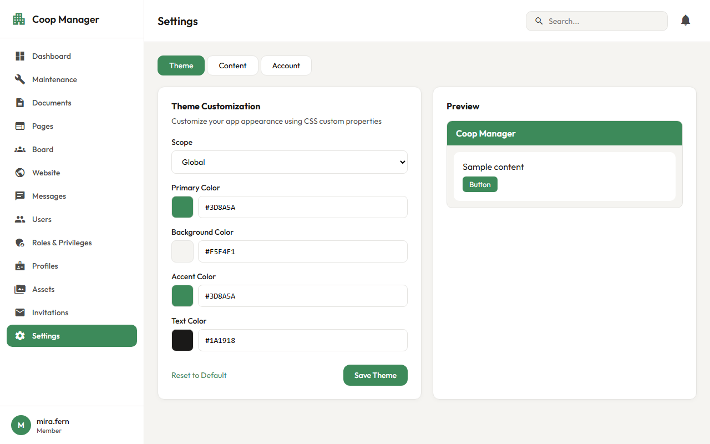

Office journey · Co-op platform
Customize the theme
Change the app’s colours
1 · Open “Settings”
Working today

The Theme tab opens first
2 · Scope, then four colours
Working today
Type a new colour code to change it
3 · Check the preview
Working today
Is the text still easy to read?
4 · “Save Theme” or “Reset to Default”
Working today
Saved colours stay after a reload
In short
1
Open “Settings”
2
Choose a scope, change the colours
3
Check the preview, and save
Thank you
Questions, however small, are welcome.